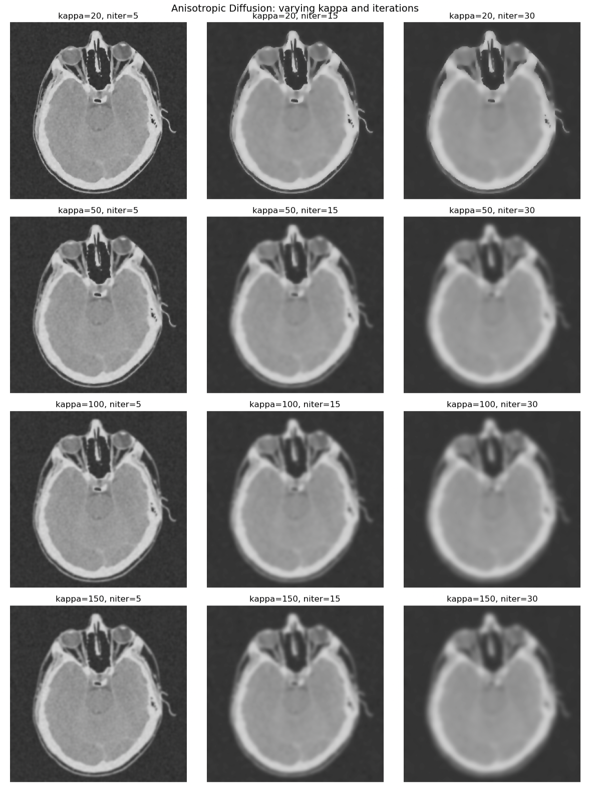

Perspective and orthographic projections, Histogram Manipulation & Linear Filtering, and Anisotropic Diffusion
Objective
Understand and apply point operations. Implement histogram equalization to improve image contrast. Explore histogram manipulation on provided test images and your own real-world examples.
Gain experience with linear filtering. Implement Gaussian smoothing and explore its effect on images. Compare the naive approach (Gaussian smoothing followed by derivative filtering) with the direct approach (Derivative of Gaussian). Experiment with sharpening filters by extracting high-frequency components and blending them back into the original image.
Develop critical thinking through creative exploration. Apply your implementations to your own images with poor contrast or blurriness, and evaluate how well the methods improve them.
Extend to advanced methods (Graduate Students Only). Implement anisotropic diffusion (Perona–Malik, 1990) and compare it to Gaussian smoothing. Analyze the effects of parameters and diffusion functions.
Part 1: Perspective and orthographic projections
Question 1
This question aims to help to understand how projection affects images. Using a camera (a phone camera is fine), take two photos of the same scene:
Perspective projection: Take a normal photo, where lines appear to converge due to perspective (e.g., a desk or the edges of a building).
Orthographic projection (approximate): Either zoom in from farther away or crop the central part of the image so that lines appear more parallel and less converging.
Perspective ProjectionOrthographic Projection
The scene depicts the Ole Miss Football stadium. The left image represents a perspective
projection, and the right image an orthographic one. In the perspective photo we can see that the parallel yard
lines on the field and the sidelines visibly converge, and objects in the distance, such as the people in the
crowd appear smaller than the ones near the camera. On the other hand, the orthographic photo, those same yard lines
are basically parallel across the frame and objects keep the same size from front to back.
Part 2: Histogram Manipulation & Linear Filtering
The purpose of this part is to help you understand and implement histogram equalization, one of the fundamental point operations, which is useful to enhance image contrast.
(a) Histogram Equalization on Provided Images
Question 1: You are given three test images (grayscale test image 1, 2, 3) with low or uneven contrast. The task is to:
Compute the histogram of each image.
Test 1Test 2Test 3
Compute the cumulative distribution function (CDF) from the histogram.
Test 1Test 2Test 3
Use the CDF to perform histogram equalization.
Display, for each test image:
The original image and its histogram
The equalized image and its histogram
Test 1Test 2Test 3
(a) Histogram Equalization on Provided Images
Question 2: Find at least one of your own images with poor contrast (too dark, too bright, or low contrast). Apply your histogram equalization implementation to this image and show the result.
Own Image, Original vs Equalized
From the original colored image we can see that the brightness is very high. We cannot really distinguish the field and the crowd in the back,
and we can also notice that is a little bit blurry. After performing histogram equalization, we can see that the people at the bottom of the image are way more sharp. the edges are very well defined, and we can clearly
distinguish each person. The blurriness is basically gone. Further more, on the original image we could not read the letters on the field; on the equalized version, we can clearly read "OLE", however, we cannot read the letters
on the further back. The crowd at the back is also way more visible after equalization, the bleachers are more visible too. Finally, the light at the top is still way too bright and blocks some of the image, but overall I believe the
quality of the image did improve after applying histogram equalization.
(c) Optional Challenge: Histogram Matching
Question 3: As an optional extension, try implementing histogram matching. The goal is to transform the histogram of a given image so that it matches a target histogram. Apply histogram matching to the three test images provided above so that their histograms resemble that of the target.
Test 1Test 2Test 3
(d) Derivative of Gaussian
Question 4: You are given three test images (grayscale test image 4, 5, 6), the task is to:
Naive Approach (Two Steps) - Smooth the image using a Gaussian filter. Apply a simple derivative filter (e.g., [-1, 0, 1]) in the x-direction and y-direction separately. Compute and visualize the results for both directions.
Test 4 NaiveTest 5 NaiveTest 6 Naive
Direct Approach (One Step) - Construct a derivative of Gaussian filter in the x-direction and y-direction. Convolve the image directly with these filters. Visualize the results.
Test 4 GaussianTest 5 GaussianTest 6 Gaussian
Comparison - Display the outputs from both approaches side by side. Briefly describe your observations: are the results nearly the same? Why might small differences appear?
Naive vs Gaussian
Both approaches produce very similar edge maps in the x and y directions since the two operations are mathematically equivalent. The edges that both approaches detected appear on the same locations and with basically the same strength, which confirms our assumption that the apporaches were equivalent. Nonetheless, minor discrepancies are visible in edge sharpness and noise levels that come from applying the filters separately vs in one single step. Overall, while there is not a pixel by pixel match, both methods seem to perform relatively the same and both got the wrok done and can be applied for computer vision tasks.
(e) Creative Task: Image Sharpening
Question 5: You are given two test images (grayscale test image CT and moon), the task is to:
Extract High-Frequency Details - Smooth the image using a Gaussian filter. Subtract the smoothed version from the original image to obtain the high-frequency component.
Sharpen the Image - Add the high-frequency component back to the original image. Experiment with different blending weights (e.g., original + α × high-frequency, with α ranging from 1 to 10). Observe how the sharpness changes as you vary α.
Moon alpha IterationsCT alpha Iterations
Creative Exploration - Apply your sharpening method to your own images. Pick at least one example where sharpening makes the image look noticeably better, and one example where too much sharpening creates artifacts (e.g., amplified noise).
Good Example of Sharpening, Two DJs Playing Bad Example of Sharpening, Fireplace in the Woods
We can see that the first image has a lot of well defined details, such as the wall in the back, the letters at the front, and the DJs' mixer itself. When we sharben the image we can see that the details have definite shapes and whenever we see the final result the image looks good. On the other hand, the seocnd image showing the firepalce has a lot of noise. This noise is captured in the deatials and the sharpened version resutls in an image with too much noise, making it look unappealing to the human eye, and even hard to distinguish what the image is trying to depict.
Part 3: Anisotropic Diffusion
This part introduces you to anisotropic diffusion, a classic image filtering technique (also called Perona–Malik diffusion) proposed by Pietro Perona and Jitendra Malik in their 1990 IEEE Transactions on Pattern Analysis and Machine Intelligence paper. The goal is to reduce noise in images while preserving important structures such as edges, something that ordinary Gaussian smoothing cannot achieve.
Question 1: Implementation of Anisotropic Diffusion $\frac{\partial I}{\partial t} = \nabla \cdot (c(x,y,t) \nabla I)$ where $c(x,y,t)
$ is the diffusion coefficient that controls the amount of smoothing depending on the local image gradient. Use the following two diffusion functions: $
c(|\nabla I|) = e^{-(|\nabla I|/K)^2} $ $c(|\nabla I|) = \frac{1}{1+(|\nabla I|/K)^2}$ Run your implementation for different values of the parameter $K$ and different numbers of iterations. How does the choice of $K$ affect the result? What happens as you increase the number of iterations?
Noisy Image 1Noisy Image 2
Noisy Image 1 Across Iterations and K values

Noisy Image 2 Across Iterations and K values
With anisotropic diffusion, the parameter k sets the edge-stopping threshold and the iteration count controls how long the diffusion runs. From the image we can see that for small k, like 20, only the very small gradients are smoothed, thus, noise inside flat regions are smoothed, but edges' noise is preserved. As k increases, we can see difussion across larger gradients, making the denoising element stronger but at the same time, edges soften, approaching a gaussian blur. More iterations will amplify k's function; with a low k, regions flatten and edges stay sharp, with high k, repeated smoothing results in something that looks kind of cartoon like. In sum, small k and moderate iterations will achieve the task of denoising while also preserving the edges. Larger k and more iterations is best went we want global smoothing, however with the result of edge blur as well.
Question 2: Comparison with Gaussian Smoothing - Apply Gaussian smoothing to the same images. Compare results side-by-side: how does anisotropic diffusion preserve edges differently? Discuss the results and the differences you observed.
Gaussian Blur vs Anisotropic Diffusion 1Gaussian Blur vs Anisotropic Diffusion 2
Gaussian blur reduces noise but also blurs edges uniformly, so edges get thicker and small details go away as σ increases. Anisotropic diffusion, on the other hand, denoises mainly inside regions and slows down at large gradients, so edges are better preserved for a similar level of noise reduction. If we look at line profiles across an edge, the Gaussian curve was more blurry, while the anisotropic result kept a steeper transition. Running diffusion for too many iterations or with a very large
K can still soften edges, but it preserves boundaries way better than Gaussian smoothing.
Question 3: Think critically about the limitations of anisotropic diffusion. Suggest one possible improvement or alternative approach, drawing from your own intuition or knowledge from other methods.
One limitation I noticed about anisotropic diffusion is that it really depends a lot on the parameters you pick. If ùúÖ is too small, then the algorithm stops diffusion too early and the image still looks noisy. But if
ùúÖ is too large or if you run too many iterations, then the edges start to blur and the image loses important details. I also saw that sometimes the result looks like flat patches where all the pixel values are nearly the same. Instead of smooth transitions, we end up with areas that look almost the same just separated by sharper edges, which is not always good. From what we tested, it‚Äôs clear that anisotropic diffusion is useful, but it can also be tricky to control because the outcome changes so much with the parameter settings.
One possible improvement could be to use an approach that denoise by looking for similar patches across the image instead of just using local gradients. That way it can smooth noise but still keep repeating patterns and edges sharper. This might solve some of the issues I noticed with anisotropic diffusion where either noise remains or edges get blurred too much.